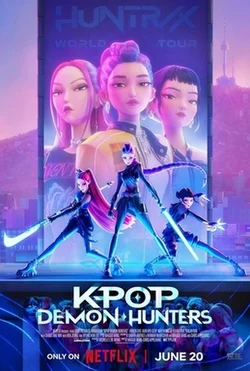
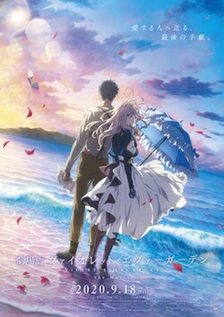
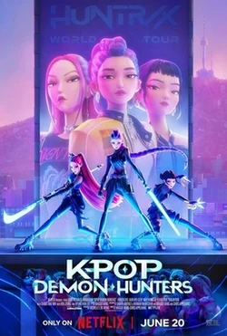
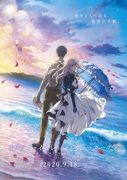

GENRE: Fantasy/Adventure RUNTIME: 1h 26m RATED:
SYNOPSIS
This acclaimed animated tale by director Hayao Miyazaki follows schoolgirl Satsuke and her younger sister, Mei, as they settle into an old country house with their father and wait for their mother to recover from an illness in an area hospital. As the sisters explore their new home, they encounter and befriend playful spirits in their house and the nearby forest, most notably the massive cuddly creature known as Totoro.
GENRE: Action/Adventure RUNTIME: 1h 36m RATED:
SYNOPSIS
When K-pop superstars Rumi, Mira and Zoey aren't selling out stadiums or topping the Billboard charts, they're moonlighting as demon hunters to protect their fans from ever-present supernatural danger.
GENRE: Action/Romance RUNTIME: 2h 20m RATED:
SYNOPSIS
After the aftermath of a war, a young girl who was used as a tool for war learns to properly live. With the scars of burns, she goes back to her past to discover her true feelings towards the Major.